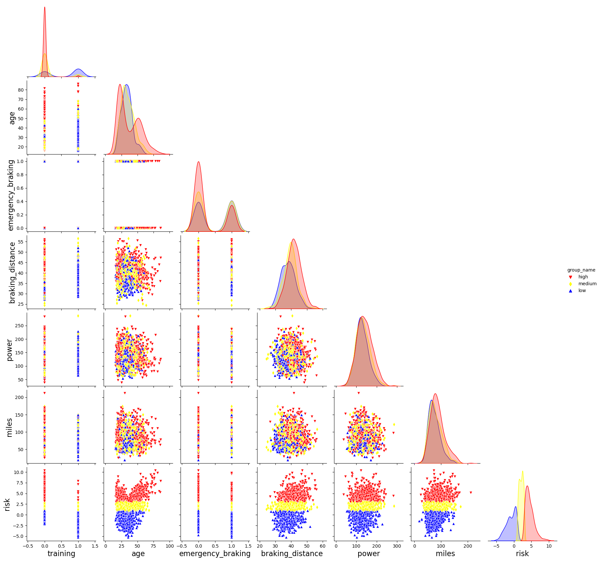
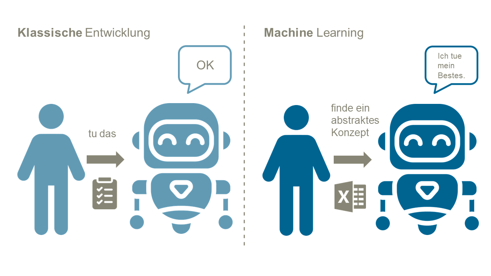
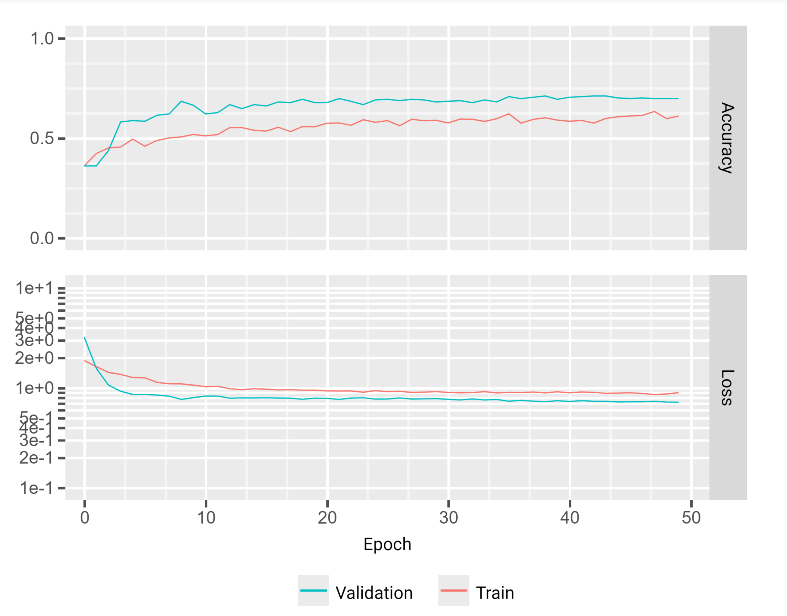

# Machine Learning mit Java WJAX, 2022, https://jax.de/big-data-machine-learning/machine-learning-mit-java/ Oliver Zeigermann oliver.zeigermann@openknowledge.de Folien: https://bit.ly/wjax-2022-ml-java <!-- https://djcordhose.github.io/insurance-ml/2022-wjax-ml-java.html --> <!-- Projekt: https://github.com/DJCordhose/insurance-ml -->
### Wer ist Olli <div style="display: flex;"> <div style="flex: 50%;"> <a href='https://oreilly.de/produkt/machine-learning-kurz-gut-2/'> <img src='img/ml-buch-v2.jpg' height="400"> </a> </div> <div style="flex: 50%; font-size: x-large;"> <img src='img/olli-opa.jpeg'> </div> </div> <p> <a target="_blank" href="mailto:oliver.zeigermann@openknowledge.de">Oliver Zeigermann</a>: Head of AI@OpenKnowledge </p>
# Sprecht mit mir Die erste *sinnvolle* Frage gewinnt ein Exemplar meines ML-Buchs
# Agenda 1. Unsere Beispielanwendung 1. Klassische Regeln 1. Lösung mit Machine Learning (ML) 1. Produktiver Betrieb 1. Ein alternatives Szenario
# Agenda 1. _Unsere Beispielanwendung_ 1. Klassische Regeln 1. Lösung mit Machine Learning (ML) 1. Produktiver Betrieb 1. Ein alternatives Szenario
## Unser Beispiel: Vorhersage von Risiken * Wir sind CTO einer hochinnovativen Kfz-Versicherungsgesellschaft * Anders als andere Versicherungsgesellschaften bestimmen wir den Tarif anhand der geschätzen Anzahl von Unfällen pro Kunde * Zielsetzung: Wie viele Unfälle werden die potenziellen Kunden haben? <img src='img/pixabay/accident-151668_1280.png' style="height: 230px">
### Vorhersage von Risiken für potenzielle Kunden Als Hilfsmittel für Sachbearbeiter oder sogar online Check denkbar <a href='html/calculator.html'> <img src='img/calculator.png' height="400"> </a> <p><small> <a href='html/calculator.html' target="_blank"> https://djcordhose.github.io/ml-resources/html/calculator.html</a></small> </small></p>
# Agenda 1. Unsere Beispielanwendung 1. _Klassische Regeln_ 1. Lösung mit Machine Learning (ML) 1. Produktiver Betrieb 1. Ein alternatives Szenario
<img src='img/classic-development.jpg' style="height: 600px;">
Domänenwissen = bekannte Daten
### Anforderungen <img src='img/insurance-new/train-data-rules.png' style="height: 600px;">
### Diese Anforderungen im Code ``` public Prediction predictFromRule(DataSet dataSet) { if (dataSet.age() > 70) { return Prediction.fromPredictionClass(Prediction.RED); } if (dataSet.age() < 35 && dataSet.maxSpeed() < 115) { return Prediction.fromPredictionClass(Prediction.YELLOW); } if (dataSet.age() < 50 && dataSet.age() > 25 && dataSet.maxSpeed() > 140) { return Prediction.fromPredictionClass(Prediction.RED); } if (dataSet.age() < 35) { return Prediction.fromPredictionClass(Prediction.RED); } return Prediction.fromPredictionClass(Prediction.BLUE); } ``` ``` record DataSet(int age, int maxSpeed, int milesPerYear) { } ```
## Wir haben jetzt eine Lösung, aber...
### Was ist mit höheren Dimensionen? <div class="container"> <div class="col">  </div> <div class="col"> <img src="img/causal-insurance/corr.png"> </div> </div> *Wir sind gut darin in 2d zu denken, 3d wird schon schwieriger, danach sind die meisten von uns komplett raus*
<img src="img/verfall-1.PNG">
<img src="img/verfall-2.PNG">
## Drift ### Die Welt verändert sich, Business Logik muss sich mit anpassen * _Covariate / Input / Data drift_: Fahrer werden immer Älter * _Prior / Label / Prediction drift_: wir sehen immer mehr gute Einschätzungen * _Concept / Model drift_: Autos bekommen immer mehr Hilfssysteme, die Eigenschaften der Fahrer werden immer unwichtiger für die Einschätzung <img src="https://docs.seldon.io/projects/alibi-detect/en/stable/_images/bg_2d_drift.png" style="height: 100%;"> <small>https://docs.seldon.io/projects/alibi-detect/en/stable/cd/background.html#what-is-drift </small>
### Wie reagieren wir auf eine Veränderung der Domäne? Wie ändern wir den Code? * Inkrementell dazu? * Neue "Anforderung" von der Fachabteilung * Wie tief verschachteln? * Komplett neu? * Es gibt sicher 100 verschiedene Stile, das zu machen. * Was ist mit der Kontinuität? * Wie testen wir das? * *Und: Hand aufs Herz, bekommen wir das eigentlich mit wenn unser Vorhersage-Code nicht mehr gut funktioniert?*
## Vielleicht überlassen wir so eine also Aufgabe lieber dem Computer? * Wir stellen wieder Daten als Basis für die Einschätzung bereit * Danach müssen wir seine Arbeit anhand von gewünschten Eigenschaften der Lösung testen (Property based testing)
# Agenda 1. Unsere Beispielanwendung 1. Klassische Regeln 1. _Lösung mit Machine Learning (ML)_ 1. Produktiver Betrieb 1. Ein alternatives Szenario
### Machine Learning
### Machine Learning 
### Ist diese KI Teufelszeug? <img src='img/sw2-clem.png' style="height: 250px"> <small> https://twitter.com/ClementDelangue/status/1536514359450652674 </small>
### Machine Learning * KI ist keine Magie * KI ist eher "künftig Informatik" * Machine Learning is die zur Zeit wichtigste Technik im Bereich KI * Machine Learning ist eine alternative Art, Software zu entwickeln * KI/ML ist Digitalisierung 2.0
### Wann macht ML Sinn? _Die Lösung des vorliegenden Problems ist unbekannt oder schwer zu spezifizieren_ _Und_ * Es gibt eine klare, einfache Eingabe und bestenfalls auch Ausgabe * Wir haben passende Paare von Eingaben und bestenfalls auch Ausgabe * Es gibt Muster in der Eingabe, die zur Vorhersage verwendet werden können * Die Lösung des Problems kann Fehler oder Unsicherheiten tolerieren * Wir sind bereit und in der Lage, in einer initialen Phase Experimente mit offenem Ausgang durchzuführen
## Machine Learning passt also zu unserer Problemstellung
## Und wie machen wir das nun?
<img src='img/supervised-ml.jpg' style="height: 600px;">
## Aber mit welcher Programmiersprache?
### TensorFlow mit Java 1. https://www.tensorflow.org/jvm * Das aktuelle Projekt * Unterstützt nicht nur Deployment, sondern die volle API inkl. Training * Aber keine High-Level Keras API * Hat strategische Bedeutung, ist aber noch nicht ganz stabil * Unterprojekt: https://github.com/tensorflow/java-ndarray 1. https://www.tensorflow.org/install/lang_java_legacy * Veraltete Version auf Basis von JNI, nur Core für die Ausführung von Modellen
### TensorFlow Java hat seine eigene Version Stabilitätsgarantien gelten nicht für Java <img src="img/tf-java-versions.png"> https://github.com/tensorflow/java/#tensorflow-version-support
### Ganz ehrlich...
### das mit Java zum trainieren von Neuronalen Netzwerken können wir vergessen
### Aber, das macht auch gar nichts...
## Umfrage ### Wer nutzt Java als Build-Tool (und nicht Maven oder Gradle)?
### Analogie: Build-Tool und ML-Training * Ein Build-Script macht aus Java-Quellen ein ausführbares Programm * Ein Trainings-Script macht aus einer ML-Architektur und Daten ein ausführbares TensorFlow Modell * Ein Build-Script schreiben wir auch für Java nicht in Java selbst * Entweder nutzen wir eine Script-Sprache (Groovy oder Kotlin) * Oder eine noch weiter standardisierte, deklarative Beschreibung (XML)
### Python für ML * Python ist perfekt für Scripting * Typen optional * Keine Kompilation * Hat die größte Community in dem Bereich * Python hat die besten Bibliotheken und Werkzeuge
### Mögliche Bibliotheken * Klassisches Machine Learning: https://scikit-learn.org * High Level Neural Networks / Deep Learning * https://www.tensorflow.org * Platzhirsch im industriellen Umfeld, Schwerpunkt auf Produktion * https://keras.io/ * Low Level Neural networks * https://pytorch.org/ * Platzhirsch im akademischen Umfeld, hat häufig die ersten Implementierungen neuer Ideen * https://github.com/google/jax Das ist alles *Python basiert*
### Wir nehmen TensorFlow * Unser Problem ist sicher auch mit klassischen Methoden ausreichend lösbar * Deep Learning ist in dieser Situation mit Kanonen auf Spatzen schießen * Neuronale Netzwerke mit TensorFlow haben aber eine besonders gute Story für Produktion * Mit der High-Level Keras API hat man eine wirklich gute Abstraktion gefunden (mehr dazu später)
### TensorFlow Code mit Python Architektur des neuronalen Netzwerks ``` model = tf.keras.Sequential() # input model.add(InputLayer(name='input', input_shape=(num_features,))) # hidden layers model.add(Dense(100, name='hidden1')) # ... komplettes Modell auf der nächsten Folie # output model.add(Dense(name='output', units=3, activation='softmax')) ``` das Training konfigurieren ``` model.compile(loss='sparse_categorical_crossentropy', optimizer='adam', metrics=['accuracy']) ```
### Komplettes TensorFlow Modell <img src='img/insurance-new/model.png' style="height: 200px"> 3 Hidden Layers langen für jedes tabellarische Problem, die Größe der Layers ist Alchemie
### Der Verlauf des Trainings ``` history = model.fit(X_train, y_train, validation_data=(X_val, y_val)) ```  <small> https://colab.research.google.com/github/DJCordhose/insurance-ml/blob/main/workspace-java/insurance_ml.ipynb </small>
### Trainingsergebnis <img src='img/insurance-new/train-data-nn.png'> ca. 70% der Daten sind in der Klassifikation richtig
### Vergleich mit händisch erstellten Regeln <img src='img/insurance-new/train-data-rules.png'> ca. 60% der Daten sind in der Klassifikation richtig
### Die Ergebnisse sehen sogar ziemlich ähnlich aus, aber... * nur ca. 60% der Daten sind in der Klassifikation richtig * das würden wir durch fine-tuning der Regeln verbessern können, aber * höchstwahrscheinlich auf Kosten der Generalisierung * das Machine Learning Modell könnte fast 100% auf Trainingsdaten erreichen * 70% sind schon optimiert für Generalisierung * ML bietet einen klaren Prozess für die Aktualisierung des Modells bei geänderter Datenlage * wenn datenbasiert gearbeitet wird, ist ML oft die erste Wahl
# Agenda 1. Unsere Beispielanwendung 1. Klassische Regeln 1. Lösung mit Machine Learning (ML) 1. _Produktiver Betrieb_ 1. Ein alternatives Szenario
### Wie bringt man denn ein Modell in Produktion??? | | Quelle | Vorgehen | Artefakt für die Produktion | |---|---|---|---| | *Traditionelle Entwicklung* | Modell | Regeln | Programm | | *Maschinelles Lernen* | Daten und Priors | ML-Algorithmus | *Modell* | | | | |
### TensorFlow Modelle können als Graph abgespeichert werden <img src="https://raw.githubusercontent.com/tensorflow/docs/master/site/en/guide/images/intro_to_graphs/two-layer-network.png"> * https://www.tensorflow.org/guide/intro_to_graphs * https://www.tensorflow.org/api_docs/python/tf/Graph#as_graph_def
### Warum interessiert uns das? * Graphen enthalten alles was man zur Ausführung eines Neuronalen Netzes braucht * Damit kann man die Python-Welt verlassen * Man braucht lediglich eine Umgebung, die die Operationen in dem Graphen ausführen kann * So eine Umgebung ist bereits in TensorFlow mit C++ implementiert und auch die Python-Version beruht darauf * *kann u.a. aus Java aufgerufen werden*
## Deployment ist ein Schwerpunkt von TensorFlow <img src='img/tf-deploy.png'> <small> * https://www.tensorflow.org/tfx/guide/serving * https://www.tensorflow.org/lite/api_docs * https://www.tensorflow.org/js </small>
<h3>TensorFlow Modelle können direkt aus Java aufgerufen werden</h3> <pre> <code data-trim><script type="text/template"> try (var savedModelBundle = SavedModelBundle.load("insurance-ml/app/classifier", "serve")) { var input_matrix = NdArrays.ofFloats(Shape.of(1, 2)); input_matrix.set(NdArrays.vectorOf(48.0f, 100.0f), 0); Tensor input_tensor = TFloat32.tensorOf(input_matrix); Map<String, Tensor> inputTensorMap = new HashMap<>(); inputTensorMap.put("input", input_tensor); var myFunction = savedModelBundle.function("serving_default"); Map<String, Tensor> outputTensorMap = myFunction.call(inputTensorMap); var prediction = outputTensorMap.get("output"); // overly complicated way to get the prediction, but so far found no better way var probas = prediction.asRawTensor().data().asFloats(); float redProba = probas.getFloat(0); float yellowProba = probas.getFloat(1); float greenProba = probas.getFloat(2); } </script></code> </pre> <!-- Demo wieder über `workspace-java/app/src/main/java/eu/zeigermann/ml/App.java` -->
### Oder über TensorFlow Serving * Erlauben direkt Ausführung eines Graphen im Server-Betrieb * Modell-Server kann lokal unter Linux installiert werden * Oder man kann so ein Modell direkt bei GCP deployen https://www.tensorflow.org/tfx/guide/serving https://www.tensorflow.org/tfx/serving/setup
### Serving ``` saved_model_cli show --dir insurance-classifier/1 --all ``` ``` export TF_CPP_VMODULE=http_server=1 nohup tensorflow_model_server --port=8500 --rest_api_port=8501 \ --model_name=insurance --model_base_path=/home/olli/insurance-model >server.log 2>&1 ``` ``` curl -d '{"instances": [[50.0, 122.0], [48, 100], [30, 150]]}' -X POST http://localhost:8501/v1/models/insurance:predict ``` <!-- Demo auch wieder über `workspace-java/app/src/main/java/eu/zeigermann/ml/App.java` -->
# Agenda 1. Unsere Beispielanwendung 1. Klassische Regeln 1. Lösung mit Machine Learning (ML) 1. Produktiver Betrieb 1. _Ein alternatives Szenario_
### Realistischer ist das Deployment eines kompletten Services <img src="img/Typical_Deployment_of_a_Machine_Learning_Service.PNG"> Neues Problem: wir haben in Adapter Code einmal in Python und einmal in Java
### Alternative Story für die Zukunft * Python ist toll für Dev * Python bringt sich aber schwer in Prod * Entweder Python Server in Prod (Python schwierig für Prod, z.B. keine statische Typisierung) oder: * Python Code nochmal in Prod JVM Sprache neu schreiben: Wir haben nicht das in Prod, was wir entwickelt haben * Java ist ist nicht gut für ML Dev * Kotlin könnte mit KotlinDL sweet spot sein * Code in KotlinDL ist für jemanden, der TensorFlow/Keras kennt direkt lesbar * Notebook Betrieb ist möglich, aber vielleicht gar nicht notwendig <small>https://github.com/Kotlin/kotlindl <br> https://blog.jetbrains.com/kotlin/2020/12/deep-learning-with-kotlin-introducing-kotlindl-alpha/ <br> https://github.com/Kotlin/kotlindl#working-with-kotlindl-in-jupyter-notebook </small>
### KotlinDL Code Architektur des neuronalen Netzwerks ``` val model = Sequential.of( Input(28, 28, 1), Dense( 100, name="hidden1" ), Dense( name="output" outputSize = 3, activation = Activations.Softmax ) ) ``` das Training konfigurieren und durchführen ``` model.use { it.compile( optimizer = Adam(), loss = Losses.SOFT_MAX_CROSS_ENTROPY_WITH_LOGITS, metric = Metrics.ACCURACY ) it.fit( dataset = train ) } ``` https://kotlin.github.io/kotlindl/
### Kann man KotlinDL jetzt schon nutzen? * NVIDIA GPU support * Ist kompatibel mit Keras, man kann Keras Modelle * laden, * zur Vorhersage nutzen und * weiter trainieren * Viele vordefinierte Architekturen: https://kotlin.github.io/kotlindl/api/org.jetbrains.kotlinx.dl.api.core.model/index.html * aktuelle Version (Stand November 2022): 0.4.0 * Es werden nur eine Untermenge alles Layers aus Keras unterstützt: https://github.com/Kotlin/kotlindl#limitations * *Im Moment noch wenig Verbreitung*
# Zusammenfassung * Machine Learning ist keine Magie, sondern einfach nur ein alternativer Ansatz zur Software-Entwicklung * Software-Entwickler können diese Technik beherrschen und in ihrem Werkzeugkasten haben * wenn datenbasiert gearbeitet wird, ist ML oft die erste Wahl * Das Training von einem ML Modell hat einen ähnlichen Charakter wie ein Build-Script * Java eignet sich nicht gut als Sprache für ein Trainingsscript * Allerdings sind TensorFlow Modelle problemlos in einen Java/JVM Umfeld in Produktion zu bringen * Kotlin könnte sich für uns Java-Entwickler zum Sweet-Spot entwickeln
# Vielen Dank Machine Learning mit Java WJAX, 2022, https://jax.de/big-data-machine-learning/machine-learning-mit-java/ Bleibt gern im Kontakt Oliver Zeigermann https://www.linkedin.com/in/oliver-zeigermann-34989773/ oliver.zeigermann@openknowledge.de https://twitter.com/DJCordhose Folien: https://bit.ly/wjax-2022-ml-java
 ## Aber mit welcher Programmiersprache?
## Aber mit welcher Programmiersprache?